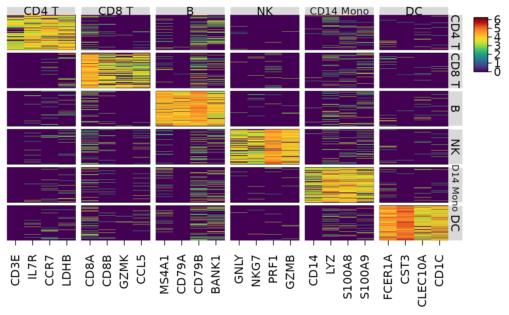
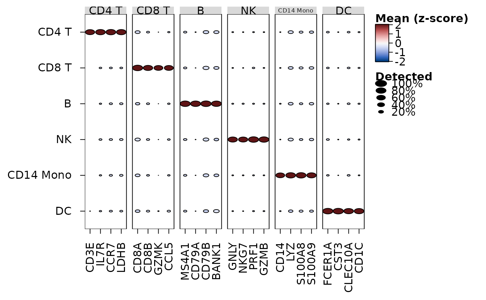
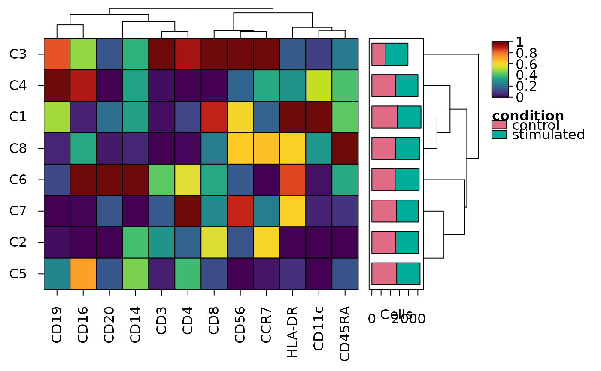
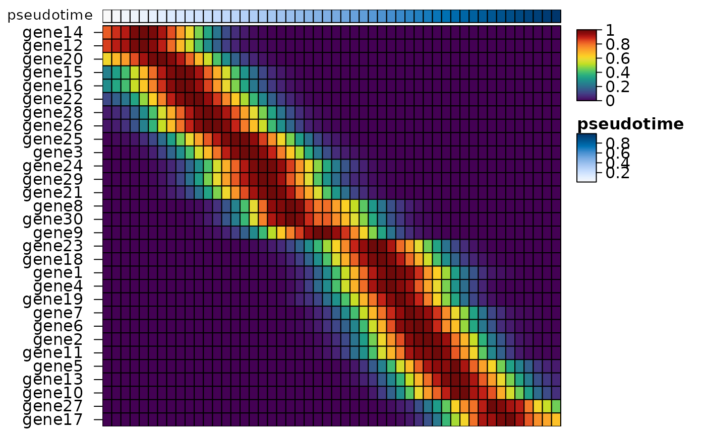

heat_map_example() simulates the single-cell data used in the
examples and guides: an RNA experiment of blood cells, cytometry events in
clusters, or cells along a branching trajectory. The data are simulated
with a fixed seed, so they are the same each time, without changing the
random numbers of the session.
Arguments
- type
the kind of data:
"rna"(default),"cytometry"or"trajectory".- class
"data.frame"(default) for a data.frame with one row per cell, holding the values of each feature followed by the cells' metadata, or"SingleCellExperiment"(for"rna"and"trajectory"; needs the SingleCellExperiment package) with genes as rows, sparsecountsandlogcountsassays and the metadata incolData().- n
the number of cells (or events), set to
NULLby default for 3,000 cells of"rna", 200,000 events of"cytometry"or 4,000 cells of"trajectory".
Value
the cells as a data.frame or SingleCellExperiment. The
metadata columns are cell_type, sample and
condition ("rna"); cluster, sample and
condition ("cytometry"); and pseudotime,
lineage1 and lineage2 ("trajectory"). For
"rna" the marker genes of each cell type are a named list in the
"markers" attribute of the data.frame, or in
metadata()$markers of the SingleCellExperiment.
Details
"rna"3,000 peripheral blood cells of six types (CD4 T, CD8 T, B, NK, CD14 Mono and DC) from four donors in two conditions (donors 1 and 2
"control", 3 and 4"treated"), with 2,000 genes. Four genes mark each cell type (e.g. CD3E, IL7R, CCR7 and LDHB the CD4 T cells; the list is in the"markers"attribute), with little expression in the other cells, and the others are background. Counts are Poisson, with a size factor for each cell, and log-normalised to 10,000 counts per cell (log1p(counts / total * 10000))."cytometry"200,000 events of 12 markers (CD3, CD4, CD8, CD19, CD20, CD56, CD16, CD14, CD11c, HLA-DR, CD45RA and CCR7) in eight clusters (C1 to C8), from eight samples (S1 to S8) in two conditions (S1 to S4
"control", S5 to S8"stimulated"). The intensities are raw, as from a mass cytometer:asinh(x / 5)recovers the simulated levels. Cluster C3 is twice as common in the stimulated samples, and HLA-DR rises in clusters C5 and C6 under stimulation."trajectory"4,000 cells of a branching trajectory with 30 genes (log-transformed counts,
log1p()), in a random order (the genes are the first 30 columns of the data.frame). Every cell has apseudotimefrom 0 to 1, andlineage1andlineage2give the pseudotime of each lineage, as slingshot gives them (missing for cells outside the lineage). The lineages share their start and branch at a pseudotime of 0.4; each gene peaks at its own point, and some genes peaking after the branch are expressed in one lineage only.
Examples
# Blood cells: the marker genes of each cell type in each cell
cells <- heat_map_example("rna")
markers <- attr(cells, "markers")
heat_map(cells, features = markers, group_by = "cell_type",
group_max = 100, axis_text_y = NA, popup = FALSE)

heat_map_dot(cells, features = markers, group_by = "cell_type",
popup = FALSE)

# Cytometry: the scaled median of each marker in each cluster, with the
# events of each condition in each cluster
events <- heat_map_example("cytometry", n = 20000)
medians <- heat_map_summarise(events, group_by = "cluster",
fun = "median", transform = "asinh",
scale = "quantile", stack_by = "condition")
#> Applying the asinh transform (cofactor 5)...
#> Non-numeric features are not summarised: sample.
#> Applying quantile scaling to each column...
heat_map(medians, tree = "both", bar_values_y = "n",
bar_type_y = "stack", popup = FALSE)

# A trajectory: genes along pseudotime, ordered by when they peak
traj <- heat_map_example("trajectory")
smooth <- heat_map_smooth(traj, along = "pseudotime", features = 1:30,
bins = 50)
heat_map(smooth, swap_axes = TRUE, scale = "row", tree_order_y = "peak",
annotation_by = "pseudotime", axis_text_x = NA, popup = FALSE)
#> Applying range scaling to each row...
